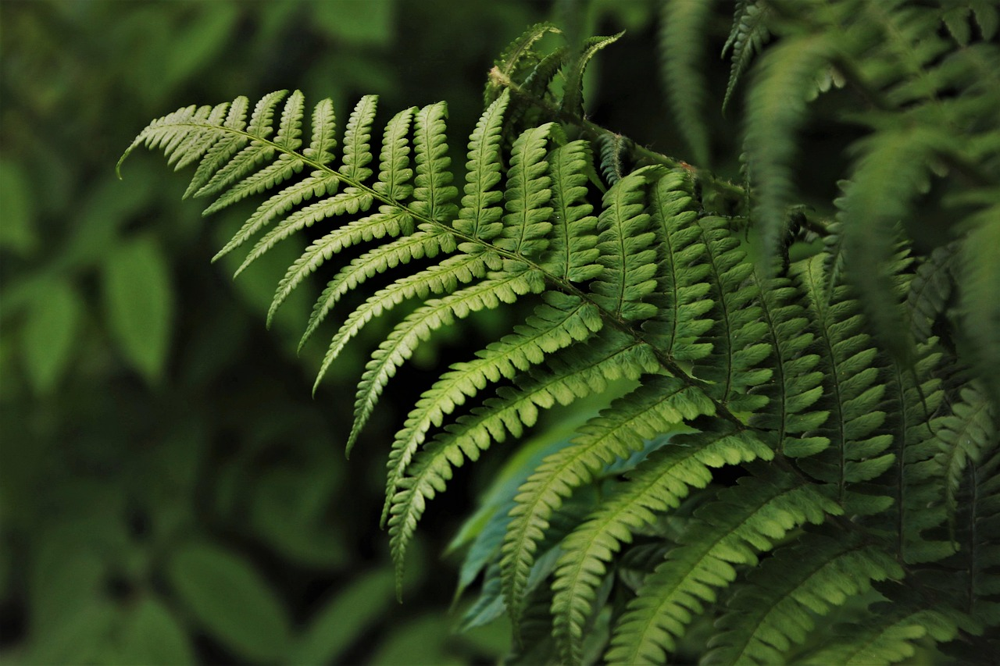
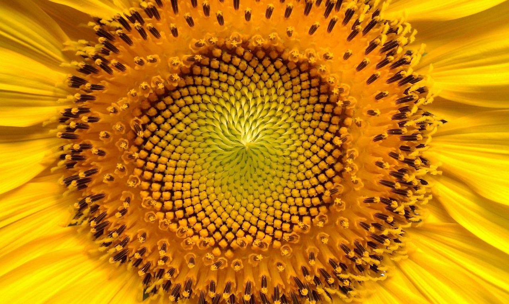
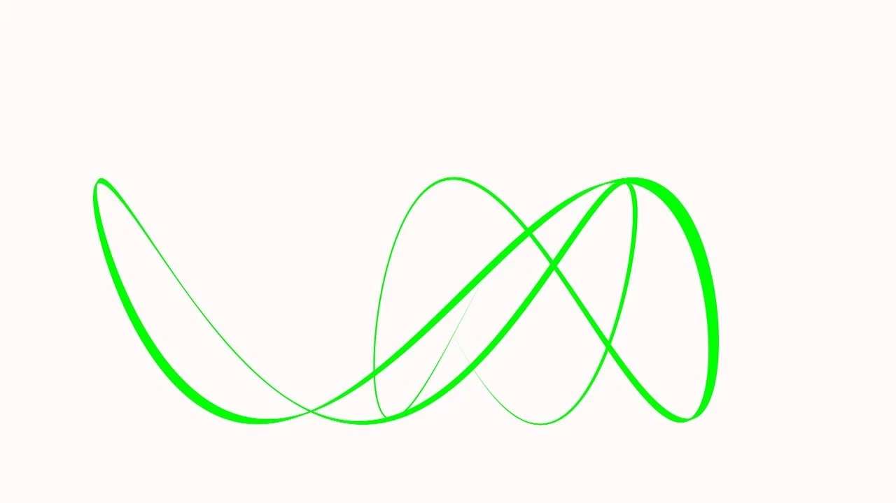
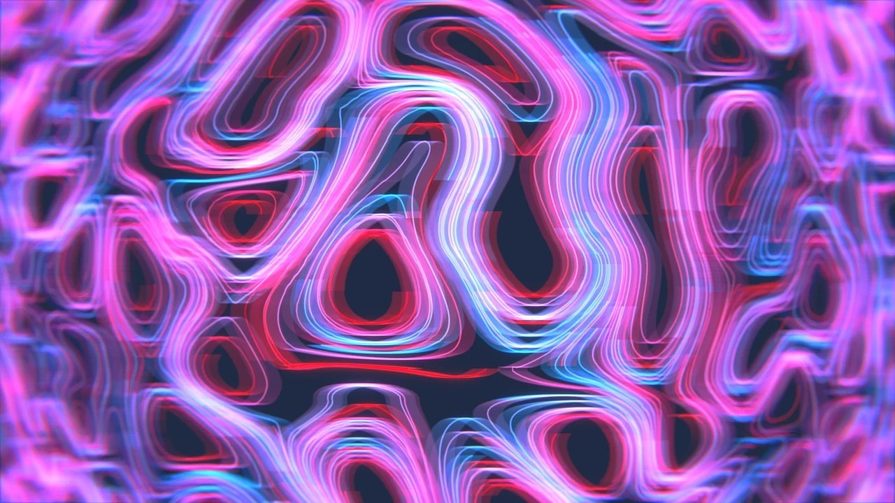

Fractals in nature


Puzzle: Why do a leaf and a whole tree repeat the same pattern?
Fibonacci spirals


Puzzle: Why is the golden ratio so common in nature?
Symmetry and mirrors
Riddle: Is it possible to cut a symmetrical pattern into equal parts?
Interference of waves
Puzzle: What happens if you superimpose two waves with the same length but different phases?
Graphs and curves


Riddle: What curve connects two simple harmonic motions?
Try to find patterns and patterns in nature yourself!